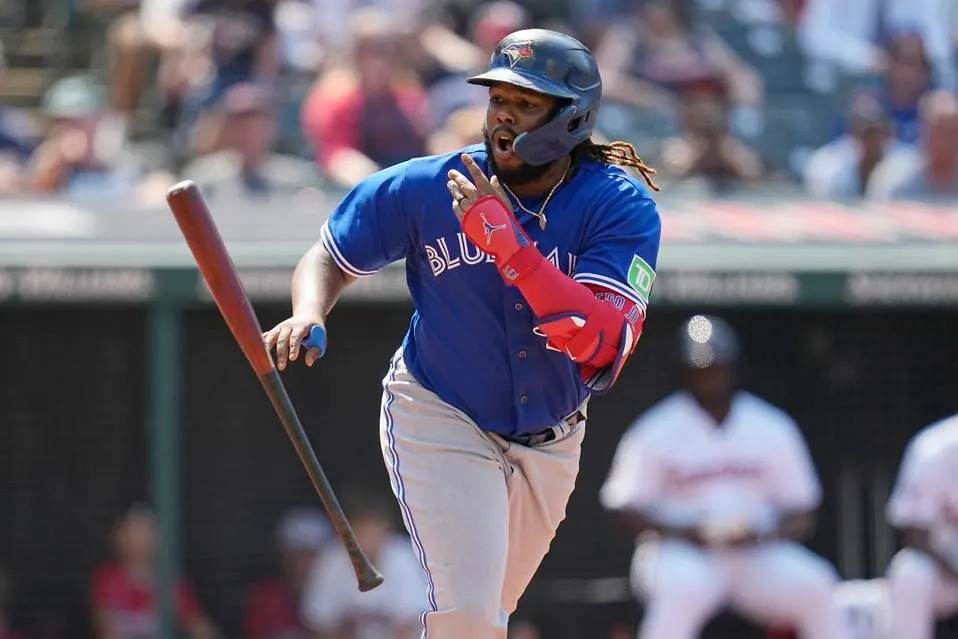
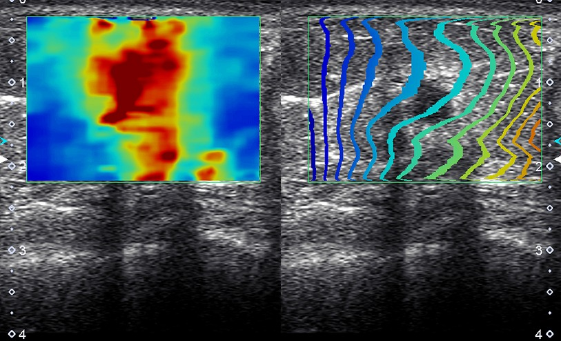
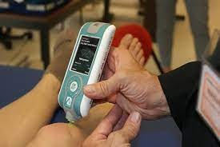
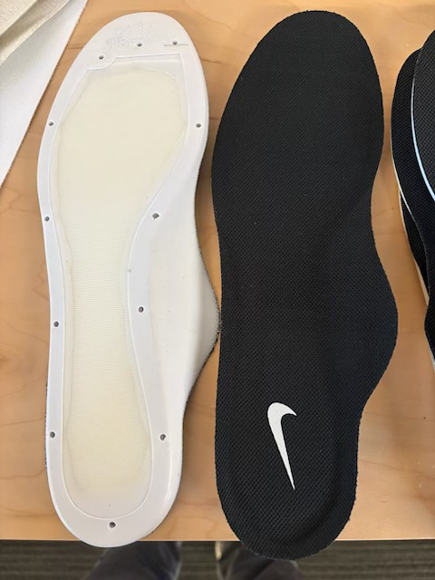
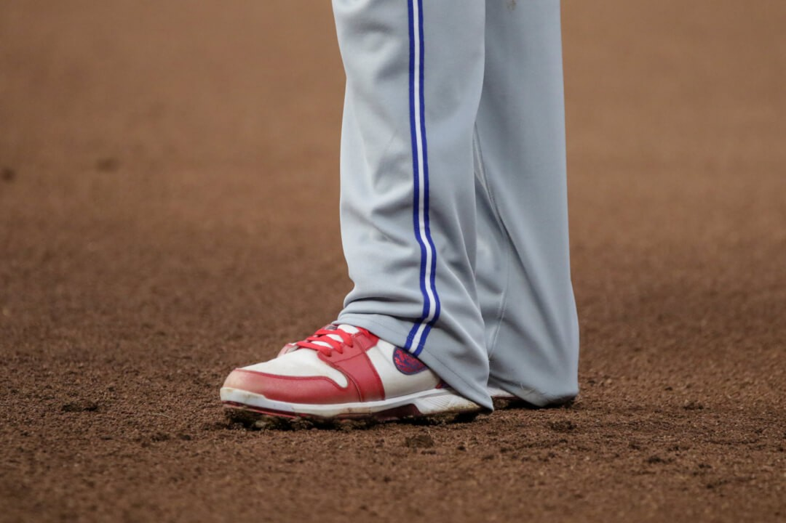

The API team's relationship with the Toronto Blue Jays performance staff didn't start with a shoe. It started with muscle and tendon tissue mechanics — specifically, shear wave elastography measured with ultrasound.
Tissue stiffness tracks with training load, changes with fatigue, and can flag an athlete drifting toward injury weeks before they feel it. The Blue Jays' staff wanted to understand it. We wanted to work with a group that cared enough to ask.
The conversation moved from Zoom to Florida. The API team ran a hands-on session at the Blue Jays' spring training facility — teaching the performance staff how to collect clean stiffness data and interpret what the probe returns, in the daily rhythm of a professional baseball camp.
Our model isn't to fly in, collect data, and disappear. It's to put the tool in the club's own hands so the practice keeps running after we leave — every subsequent spring, cage session, and bullpen turns into another data point they can read on their own.
Muscle and tendon stiffness are mechanical properties — measurable with two clinical tools that fit in a training-room bag.


SWE gives spatial maps of specific tendons and muscle heads. Myoton PRO gives rapid point measurements when you're screening the full roster. Together, one staffer can cover a whole camp before batting practice.
Out of the training week came the next question: what happens to muscle and tendon stiffness as training load ramps through a baseball season? The API team scoped it across three time scales, so the club could pick the one that fit its calendar.
Daily, 3–4-week protocols don't fit inside the NSRL — athletes visit for hours, not months. A club partnership unlocks chronic learnings a lab visit can't touch: how soft-tissue properties change over time, and what that means for training, recovery, and product.
This part wasn't in the proposal. While we were on-site scoping the stiffness work, a second signal came in from the players — not from a form, just from the room. Their cleats hurt. Long days of standing on metal-bladed shoes on artificial surface were beating up their feet.
There was no fix in hand — no drop-in product, no trusted solution. The players had a real problem. We took it back to Nike.
We took the problem to Adam Welliver and the Nike Space team — the group that lives inside the shoe, in the space between the foot and the ground. If anyone had a fast, drop-in fix for cleat pressure, it was them.
Their answer: the Zoom Sock Liner — a thin, full-length Zoom Air bag inside a sock-liner form factor that drops into virtually any shoe.
The Zoom helps alleviate cleat pressure and adds responsiveness to improve comfort for athletes compared to regular foam sock liners.

We handed a batch of Zoom Sock Liners to the Blue Jays performance staff. Star first baseman and Jordan athlete Vladimir Guerrero Jr. was the first to try them — and the first to stick with them.
Vlad has been running the Zoom Sock Liners in his cleats since 2024. Teammates noticed. Word moved player-to-player through the clubhouse, and the performance staff came back to ask us to outfit the whole team.
Two seasons later in 2026, the roster is still asking for Zoom Sock Liners as their comfort solution.

Zoom Sock Liners in an MLB clubhouse were never the plan. They're what happened when we showed up for a different reason and listened.
Science creates the door. Presence creates the pivot. Product closes the loop.
The stiffness collaboration put us on the field. Being on the field put us in earshot of a comfort problem we hadn't come for. Having the Nike Space team a call away turned it into a product a superstar first baseman — and eventually the whole clubhouse — would still be wearing two seasons later.